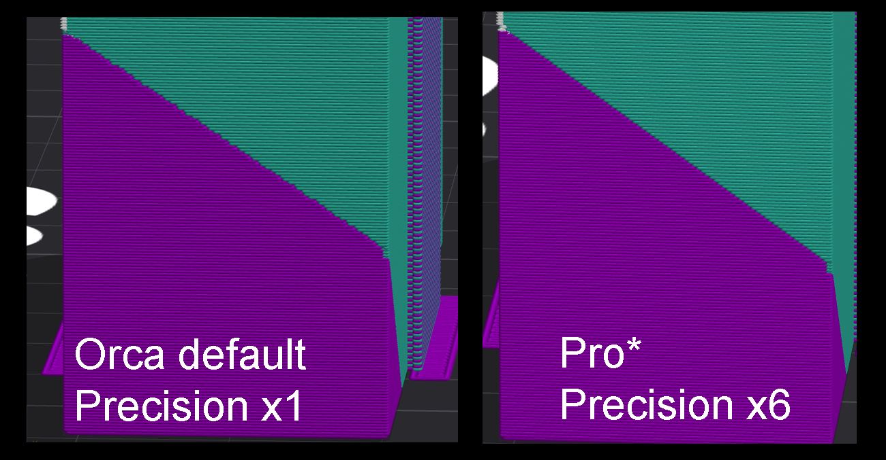
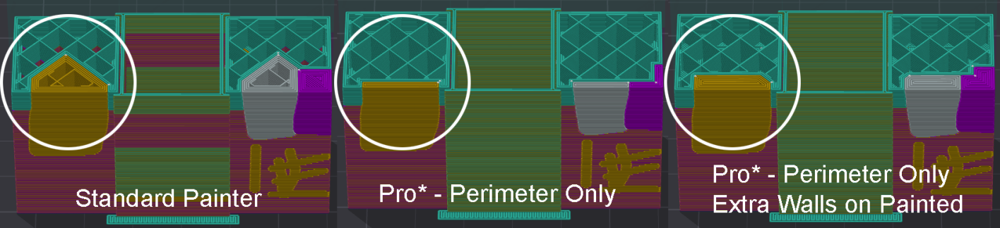
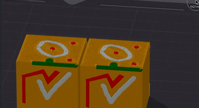
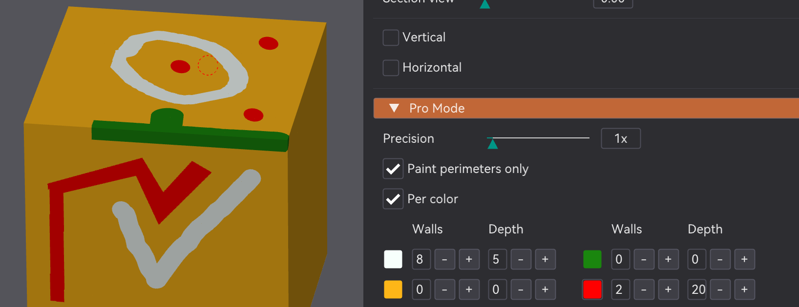
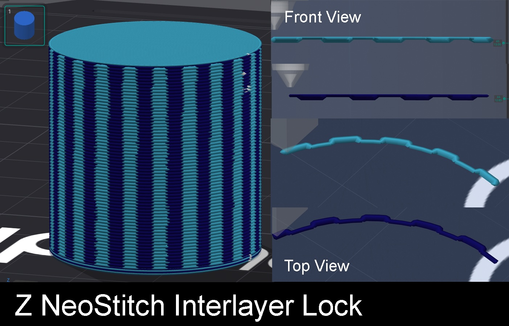
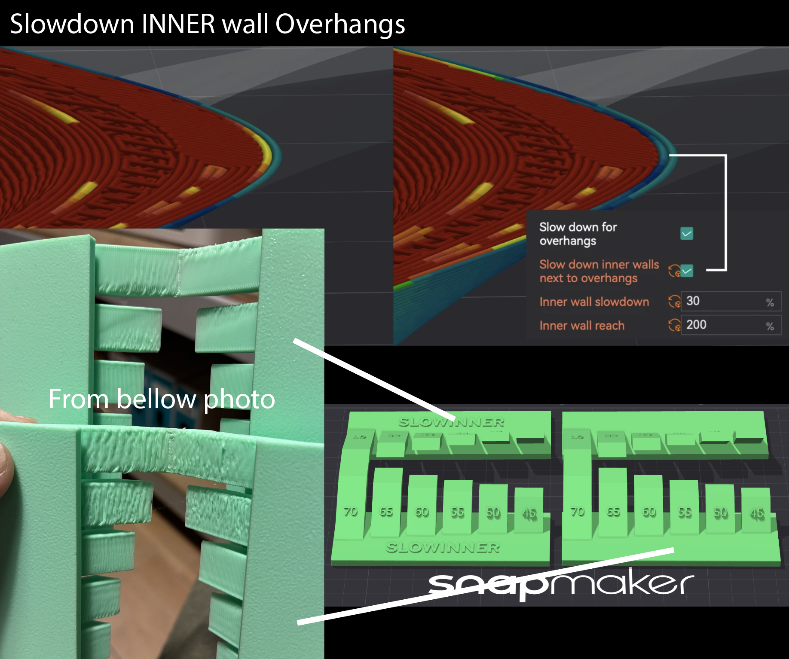

§8 · §13 · §14 — Structure
Walls
Three separate things about the outside of a print: which engine generates the wall paths, how precisely you can paint on them, and an experiment in interlocking layers without ever moving Z.
NeoArachne
- Libre Mode
- Neotko Hybrid v2 by default
Where Quality›Wall generator›NeoArachne
Slicers give you one wall generator for the whole part. Classic gives constant-width walls with the cleanest visible surface and no width breathing, but it cannot adapt to thin features without a separate gap-fill pass. Arachne gives variable-width beading with integrated gap fill, which is what you want on the inside and not always what you want on the outside.
NeoArachne stops making you choose once for everything. It sits beside Classic and Arachne in the dropdown and lets you pick, per feature, which underlying engine prints it.
Per-feature engine choice
| Setting | Options |
|---|---|
| NA — outer wall source | Classic / Arachne (stock) / Arachne (NeotkoEdge) |
| NA — inner walls source | Classic / Arachne (stock) / Arachne (NeotkoEdge) |
| NA — gap-fill source | Off / Classic / Arachne (stock) / Arachne (NeotkoEdge) |
- Classic — constant width, cleanest visible surface, no breathing. Cannot adapt to thin features without a gap-fill pass.
- Arachne (stock) — variable-width beading with integrated gap fill. Best for inner walls.
- Arachne (NeotkoEdge) — Arachne with the NeotkoEdge bead-count stabiliser. Its extra tuning knobs from the older fork are not exposed in this build yet.
The default recipe, Neotko Hybrid v2, is outer Classic, inner Arachne (stock), gap fill off. Leave the controls alone for a first slice and that is what you get: a clean constant-width outer surface with Arachne handling the awkward interior.
Edge Closure controls
| Control | Range / default | What it does |
|---|---|---|
| NA — allowed perimeter overlap | 0–100%, default 0% | How much the first inner Arachne bead may overlap the Classic outer. Raise to 5–15% only if you see a seam. High values blob. |
| Min Line Width | 5–100% of nozzle, default 40% | Minimum bead width Arachne emits. Higher widens thin features, with a blob risk. 30–50% is the useful range. |
| Max Line Width | 100–200% of nozzle, default 200% | Ceiling on bead width. Lower it to 130–150% for more, narrower beads. |
| Min Feature Threshold | 1–100% of nozzle, default 10% | Geometry thinner than this is discarded. Keep it low, and it must stay at or below Min Line Width. |
| Preserve Thin Edges | default on | Keeps short closure tails near the outer perimeter for cleaner seams. |
Preview Lab
A panel inside the NeoArachne section that renders the planned wall paths before slicing: outer and inner paths in distinct colours, the execution order, seam dots, travel moves and a head animation. There is a layer slider, an animation speed, a ghost or printed build mode, zoom, "use selection", and a Dump button that exports the whole plan as JSON for off-line diagnosis.
Known limitation: a small visual divergence against the real slice on the second-to-last inner wall, in narrow waist regions of some geometries. If you hit it, Dump the JSON and share it with the 3MF.
Painter Pro Mode
- no gate
- always available
Where Left gizmo toolbar›Color Painting›Pro Mode
Color Painting is the stock multi-material painter: it hand-assigns filaments to triangles and needs two or more filaments configured. Pro Mode is a collapsible section added to the bottom of its panel. It is a different tool from the fork's own ColorStitch Painter, which paints Sandwich recipes rather than raw filament.
The stock brush paints with a circle or sphere cursor, which is naturally imprecise on small details: a click can bleed well past where you meant. Pro Mode attacks that from four directions.
Brush precision
A Precision slider, 1× to 8×, subdivides the mesh more finely right where you
are painting, so the edge of a stroke follows the surface instead of stair-stepping at low
mesh resolution. Higher values cost more memory and CPU on dense meshes. 1× is
identical to a build without Pro Mode.

Paint perimeters only, and Extra walls

| Control | What it does |
|---|---|
| Paint perimeters only | Limits the painted colour to a ring near the painted region's contour, about wall-count × line-width wide, instead of filling the whole area solid. The interior reverts to the object's base colour, which saves filament and stops burying colour changes in solid infill where nobody will see them. |
| Extra walls | Adds this many extra perimeter walls to the painted region only, on top of the object's normal wall count. For a painted logo or trim that needs a bit more wall depth than the rest. 0 disables it. |
Turning on Extra walls automatically widens the perimeters-only ring to make room for them, and if you raise Extra walls later the ring re-widens to match.
By design. If you paint a region with the same colour the object already prints in, there is no visible colour change there, so Extra Walls is skipped for that region rather than silently doubling up walls in the same physical spot for no benefit. This only matters if you are using the painter to add wall thickness rather than colour: paint with a genuinely different colour to force it, or use a plain modifier mesh for pure geometry changes.
Rectangle and Polygon masks
| Tool | How to use it |
|---|---|
| Rectangle mask | Enable the checkbox, then click-drag a box anywhere on screen. Release to paint everything under it. |
| Polygon mask | Enable the checkbox, then click to place vertices one at a time. Click near the first vertex again, with at least three placed, to close the shape and paint it. Click-drag an existing vertex to reposition it before closing. Right-click cancels. |
Both tools only paint front-facing triangles, the side of the mesh actually facing the camera, so a mask never bleeds through to the back the way a naive screen-space fill would. The two checkboxes are mutually exclusive, and both work with either Classic or Arachne.
Escape does not cancel a polygon in progress. Right-click does. Worth remembering if you are used to Escape backing out of in-progress tools elsewhere in Orca.
Surface depth 2.3.8
Paint a design on the top or bottom of an object, a logo or a letter or a mark, and Surface
depth extends it into the object as solid infill of the painted colour,
following the painted silhouette exactly, for as many layers as you choose
(0–20, 0 = off).

- It is not a cosmetic reclassification. Those layers genuinely print as solid walls-to-walls material of the painted colour, surrounded by whatever sparse infill the rest of the layer uses.
- Depth is counted in extra layers past the painted surface, since the painted surface is already solid.
- Where the projection overlaps areas that were already solid (your top shell, vertical shells, Sandwich internals) nothing double-counts. The projection only converts sparse infill, and it never touches Sandwich's penultimate layers.
- It works symmetrically for bottom-painted surfaces, projecting upward.
- Deep projections can add toolchanges on layers that previously had none, the same as if you had painted deeper by hand. The wipe tower handles it with its normal machinery.
Per color 2.3.8

The Per color checkbox switches Extra walls and Surface depth from one global value to a
per-colour table: one row per filament with its swatch, a Walls field (0–8) and a
Depth field (0–20). A 0 in the table means "use the global value". Clicking
a colour swatch in the table also selects that colour for painting.
Mixed-filament note: Depth distinguishes mixed slots individually, while Extra walls for mixed slots falls back to the global value, because mixed paint resolves to its physical components at wall-generation time. And a known edge case that is not a Surface depth bug: a MixedFilament blend that ends in the same colour as the object's own filament will not generate its lower blend layers either. The whole blend chain gets skipped, not just the correctly-redundant top layer. Suspected stock-pipeline gap; the workaround is to not end a blend on the object's base colour.
NeoStitch Interlock untested
- no gate
- preview only, never printed
- one control is a confirmed no-op
Where Strength›NeoStitch Interlock·per region, like Fuzzy Skin
Everything below is confirmed working in the 3D preview only. No real print has ever been made with it. Treat it as an early look rather than a feature to rely on, and note that one of its own controls (fill speed) is a confirmed no-op that does not currently change the G-code at all.
NeoStitch interlocks consecutive printed layers of a chosen wall without ever moving Z. Along the wall's own path, each layer alternates short notch segments, where the wall deflects inward and leaves a gap at the nominal position, and fill segments, where the wall over-extrudes instead to fill the gap left by the layer above or below. The pattern's phase flips on alternating layers, so a fill segment always lands over the notch of the layer beneath it: a vertical stitch between layers.
That makes it mechanically different from a Z brick-layer interlock. Z itself never moves; only the XY position and the extrusion width change, which is what keeps it fully backward compatible with normal slicing when it is off.

| Control | Default | What it does |
|---|---|---|
| NeoStitch Interlock | Disabled | Which wall gets the interlock: Outermost / Second / Third / Innermost. |
| Stitch depth | 0 mm (auto) | How far the notch deflects inward. Auto means the wall's own line width; an explicit value overrides it. |
| Stitch length | 3.0 mm | The flat plateau length of each notch or fill segment. |
| Ramp length | 1.0 mm | The transition ramp in and out of each segment, which also smooths the pressure and flow change. |
| Stitch period | 10.0 mm | Distance between successive notch/fill events along the wall. |
| Stitch flow | 100% | Scales the fill segment's extra extrusion. 100% is automatic volume conservation for the notch depth being filled. |
| Skip bottom layers | 3 | Extra layers to skip above the first layer before the interlock starts. |
| Fill speed | 75% | ⚠️ Known bug, does not work. Intended to slow only the fill segments, because Klipper's pressure advance dislikes the non-constant flow at full speed. Confirmed by G-code inspection that the speed does not change. Root cause not found yet. |
| Fill margin | 1.0 mm | Shrinks the fill segment shorter than its matching notch by this much per side, so the over-extrusion lands inside the gap rather than bridging across it. Confirmed working. |
Other known limits: Arachne only in v1, since Classic walls are unaffected by the setting. It interacts with Fuzzy Skin and Bump Mapping by mutual exclusion rather than composition, so if either is active on the same wall NeoStitch skips that wall instead of stacking effects. And a cascade to neighbouring walls, so an interior wall follows the perturbed contour instead of keeping its original offset, is designed but not implemented.
Overhang Shadow
- Libre Mode
- print-verified
- 2.4.5
Where Speed›Overhang speed›Slow down inner walls next to overhangs
Stock
The outer wall of an overhang is slowed down and gets the overhang fan. The inner wall right behind it went down a few seconds earlier at full speed, because the slicer measured it as supported. It is. The wall it has to hold up is not.
With the shadow
The inner wall is graded as if it were the wall next to it, by a percentage you set. At 100% it gets exactly what the overhang gets, fan included. At 30% it gets a third of the way there.
Orca decides how much to slow a wall down by measuring how far each point of it sits from the edge of what was printed underneath. That measurement is a signed distance: negative while the point is over solid material, positive once it is over air. The buckets in the table below are just that distance carved into bands.
The whole feature is one line of arithmetic on that number. The wall you want to protect sits one line width further out than the one being measured, so adding ratio × reach to the distance walks the inner wall that far towards its neighbour and lets the existing grading do the rest. The fan comes along for free, because the fan reads the same measurement.
Away from an overhang it costs nothing and there is nothing to detect. A wall with solid material under it sits far inside that boundary, so shifting it one line width does not move it into a different band. The geometry does the filtering.

It is printed. The undersides of those steps come out visibly better with the box on, and the difference is bigger than the size of the change would lead you to expect. The overhang comes out better because the bead it lands on was printed better.
estimate_extrusion_quality()
in GCode/ExtrusionProcessor.hpp: the same overlap bands, the same interpolation
between them, the same shift this feature adds. Speeds are a sample profile, 200 inner and
125 outer, with the overhang bands at 0 / 50 / 30 / 10 and bridge at 50.
| Control | Default | What it does |
|---|---|---|
| Slow down inner walls next to overhangs | Off | The feature. Needs Slow down for overhang on, since that is the machinery it feeds. |
| Inner wall slowdown | 30% | How much of the neighbour's treatment this wall borrows. 100% grades it exactly as the overhanging wall, fan included. |
| Inner wall reach | 200% | How far out to look, as a percentage of line width. 100% is the wall immediately next to this one; 200% still finds the overhang when it starts a little beyond it. |
On the first model this was tested on, 96% of the inner wall running within 1.3 mm of an overhang was already being slowed by Orca on its own, median 50 mm/s against 200 elsewhere, and the median was the same with the feature off.
The demo says where the window actually is. Grading starts about a quarter of a line width past the edge, and the inner wall sits a full line width behind the outer one, so the inner wall only starts slowing on its own once a layer steps out by more than roughly 1.25 line widths. Below that the outer wall is over air and the inner one is still at full speed, which is the case this exists for. Above it, Orca was going to slow both anyway.
It has no effect when walls print outer wall first, since then the inner wall goes down after the overhang and there is nothing left to anchor. Someone asked upstream for this kind of control and the request closed with no answer, OrcaSlicer #3891.
The catch
- NeoArachne is Libre Mode only and its Preview Lab has a known divergence on the second-to-last inner wall in narrow waists.
- Mixing engines has a seam to manage. That is what the allowed-overlap control is for, and pushing it high blobs.
- Precision costs memory and CPU on dense meshes, proportionally.
- Surface depth adds toolchanges on layers that had none, which the wipe tower then has to absorb.
- NeoStitch has never been printed, and one of its controls does nothing. It is here because it is interesting, not because it is ready.
- Overhang Shadow only has a window on shallow slopes. The print behind it is clear, but on steeper geometry Orca already slows most of those walls without it, so there is nothing left for it to do.